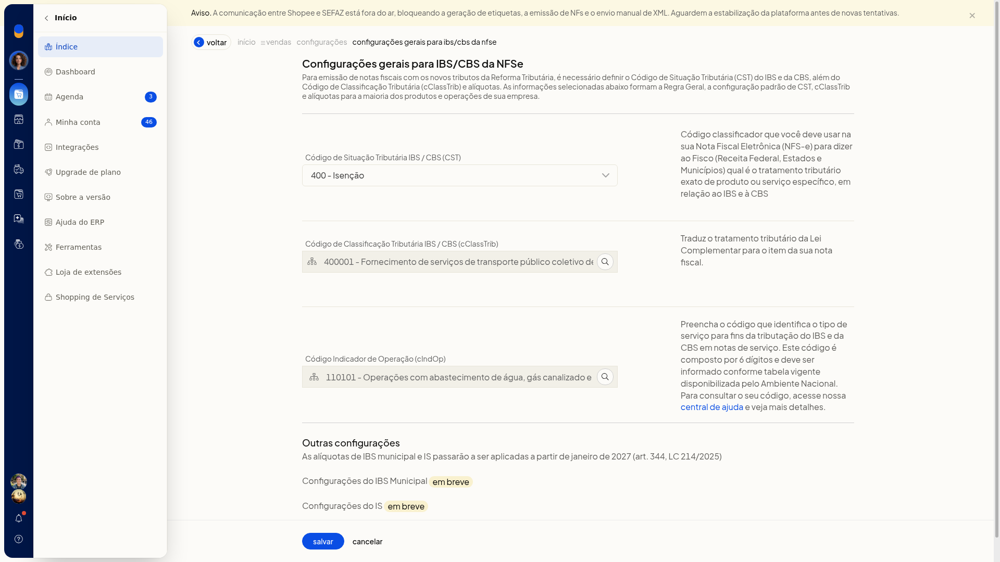
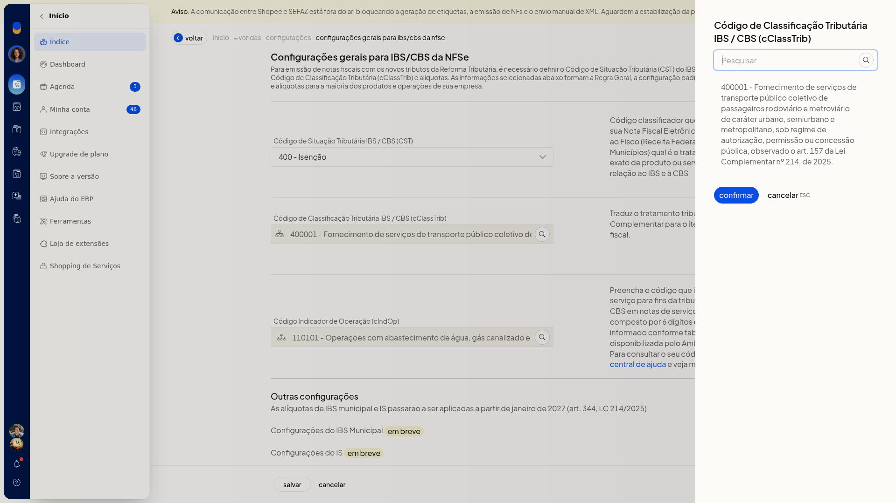
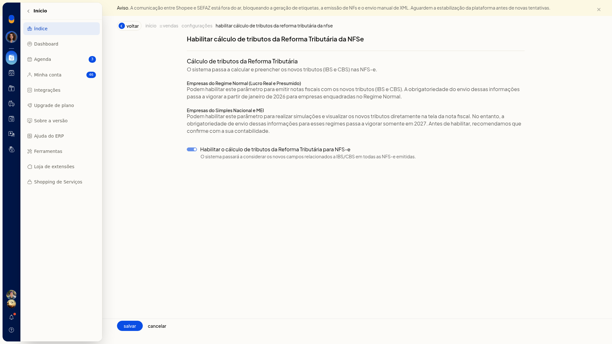

Reforma Tributária: configurar e emitir NFS-e (padrão nacional)
Importante
- IBS Municipal e IS aparecem como em breve, com efeito citado para janeiro de 2027.
- Na seção NFSe não há cadastro de regra específica. A configuração vale como padrão para os serviços.
Instruções
Configurar a classificação padrão
-
Acesse Configurações > Configurações ERP > Tributação (RTC).

-
Em NFSe, clique em Configuração dos tributos e códigos de classificação.
-
Selecione o CST. O campo não é obrigatório. As opções são:
-
000 - Tributação integral
-
010 alíquotas uniformes
-
011 alíquotas uniformes reduzidas
-
200 Alíquota reduzida
-
221 Alíquota fixa proporcional
-
400 Isenção
-
410 Imunidade e não incidência
-
510 Diferimento
-
515 Diferimento com redução de alíquota
-
550 Suspensão
-
620 Tributação Monofásica
-
800 Transferência de crédito
-
810 Ajuste de IBS na ZFM
-
811 Ajustes
-
820 Tributação em documento específico
-
830 Exclusão da Base de Cálculo

-
Informe o cClassTrib. O campo não é obrigatório. Na pesquisa, clique em Pesquisar, escolha o código e clique em Confirmar. Cancelar fecha a pesquisa sem aplicar o código.

-
Informe o cIndOp. O campo não é obrigatório e vale só para a NFS-e. Na pesquisa, clique em Pesquisar, escolha o código e clique em Confirmar. Cancelar fecha a pesquisa sem confirmar.

-
Clique em salvar. A classificação geral, inclusive o cIndOp, passa a ser o padrão da NFS-e.
Habilitar o cálculo na NFS-e
-
Em NFSe, clique em Habilitar cálculo de tributos da Reforma Tributária.
-
Marque Habilitar o cálculo de tributos da Reforma Tributária para NFS-e. Com a opção habilitada, o sistema passa a considerar os novos campos de IBS/CBS em todas as NFS-e emitidas.

Resultado
Em Tributação (RTC), o item de cálculo da NFSe pode aparecer como habilitado. A configuração geral mostra o CST, o cClassTrib e o cIndOp usados como padrão dos serviços.
Informações adicionais
A NFS-e usa só a regra geral
A seção NFSe tem a configuração dos tributos e a habilitação do cálculo. Ela não exibe Cadastro de regras tributárias.